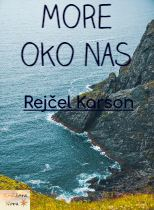

More oko nas
Autor: Rejčel Karson
Počeci su obično magloviti, pa je tako i s morem – tom velikom majkom života. Mnogi su raspravljali o tome kako su i kada nastala mora na Zemlji i stoga nije nimalo čudno što se ta objašnjenja uvek ne slažu. Jer, jasna i nepobitna je istina da nije bilo nikoga ko je to video, te je, u nedostatku očevidaca, prirodno da postoje izvesna neslaganja. Tako će, prema tome, kad vam ovde ispripovedam kako je mlada planeta Zemlja stekla more, ta pripovetka biti sastavljena na osnovu mnogih izvora i sadržaće čitava poglavlja čije ćemo pojedinosti mi moći samo da zamislimo. Ova pripovetka se zasniva na svedočanstvima najstarijih stena na Zemlji, koje su bile mlade kada je i Zemlja bila mlada; na svedočanstvima koja su zapisana na licu njenog pratioca Meseca, kao i na osnovu znakova koja su nam poznati iz istorije Sunca i celog svemira ispunjenog zvezdama. Ali, iako tada nije bilo ljudi da prisustvuju tom kosmičkom rađanju, tu su bile zvezde, Mesec i stene, a oni su zaista odigrali značajnu ulogu pri stvaranju okeana.
